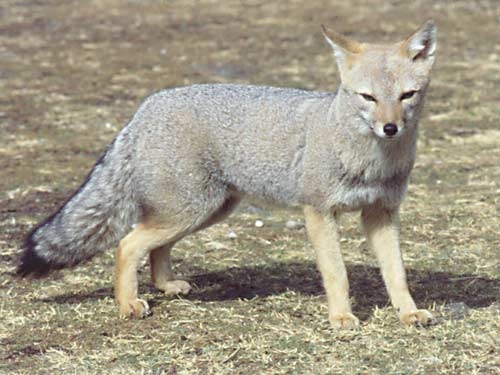

Zorro gris
- Nombre comun: Zorro gris
- Nombre cientifico: Urocyon cinereoargenteus
- Origen: es uno más de los mamieros originarios de Norteamerica (igual que el jaguar, el puma, las dantas, el venado de cola blanca, etc.) que han extendido su area de distribucion hacia el sur, colonizando las regiones tropicales. En la actualidad, su rango de distribucion abarca desde Canada hasta Venezuela.
- Cantidad: 17
- Caracteristicas: El zorro gris es un pequeño canido, de entre 2,5 y 4,5 kg de peso y 40 a 60 cm de longitud, sin incluir la cola que añade otros 30 cm. El color general del pelaje es grisaceo, con zonas de color amarillento, como en la cabeza, la cual ademas está orlada de blanco, y las patas. La barbilla y la punta de la cola exhiben sendas manchas negras, en tanto que los muslos y el dorso de la cola presentan una banda de ese mismo color. La region ventral es blancuza. La forma del hocico es puntiaguda. Las orejas son grandes y la cola es larga y de pelaje denso.
- Alimentacion:consume una amplia variedad de frutos, invertebrados y pequeños vertebrados (entre ellos, aves y roedores).
- Reproduccion: Las crias nacen en el interior de una madriguera luego de un periodo de gestacion de entre 53 y 63 dias. una camada suele estar compuesta por entre 3 y 7 cachorros.
- Estado de conservacion: No se encuentra en amenaza de peligro de extincion.